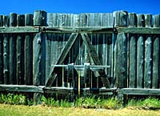
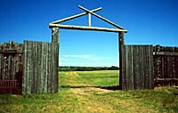
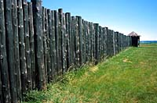
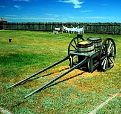
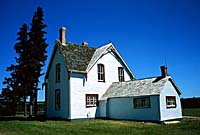
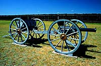
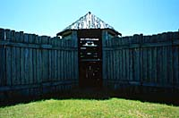
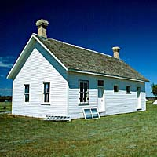
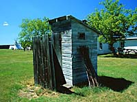

|
|
"Environmentally Sensitive Area". Please be careful where you walk and try not to disturb the natural environment. For additional information please contact Tourism Saskatchewan. | ||
| Fort Battleford | |||
| GPS: | 52d 43.64m N | 108d 17.73m W | 1535 feet |
| Location: | The QTVR at the end of this page was shot inside of the fort. City of Battleford. | ||
 The North West Mounted Police force was created in 1873 to bring law and order to the Canadian prairies. The Police established Fort Battleford at the junction of the Battle and North Saskatchewan Rivers, an area rich in Indian and fur trade history. | |||
 When Fort Battleford was constructed as a North West Mounted Police post in 1876, the town was designated as the capital of the newly created North West Territories. The capital was soon moved to Regina, but the post at Fort Battleford was to play an important role in the settlement of the west. | |||
 In 1885, arms conflict broke out on the prairies when Metis and Indians took up arms in defiance of the federal government during the North West Rebellion. Indians in the Battleford area decided to converge on the post in large numbers in hopes that the local Indian Agent would deal with them more favourably. Unfortunately, news of their approach arrived at the same time as news of the fighting at Duck Lake. For a month, Fort Battleford sheltered over 500 townspeople who expected an Indian attack. In taking steps to restore law and order, the Fort Battleford detachment of the North West Mounted Police was involved in a skirmish with Indians at Cut Knife Hill. In the aftermath of the Rebellion, eight prisoners were found guilty of murder in the Frog Lake Massacre and were hanged within the stockade of Fort Battleford. | |||
 In the years following, the North West Mounted Police played an important role in the settlement of the prairies and in the administration of the Indian Act. Today, at Fort Battleford, you can relive the lives of the Mounties who played a vital role in the period of conflict. Discover the important part they played in the settlement of the west and the history of the native peoples of the area and how the conflict of 1885 developed. | |||
 Your first stop should be the Visitor Reception Centre where a video sets the stage at the fort in 1885. You can pick up a walking tour pamphlet that describes the buildings and history of the fort, or go on a tour with the guides dressed in period costume. | |||
 Inside the stockade, you will walk past a large nine-pounder muzzle loading rifle on your way to the Commanding Officer's residence, a two-storey house built of hewn logs and furnished to the 1885 period. You will also see the Officers' Quarters where some of the higher ranking officers lived, the Sick Horse Stable which was used as the veterinarian's office, and the Guard House with its six cells and guard room. | |||
 Tents set up inside the stockade represent the sleeping quarters of the enlisted men who used bell tents in the summer instead of sleeping in the barracks, while men of rank used larger frame tents. | |||
 Outside the stockade is Barracks Number 5, which has exhibits relating the history of the Mounted Police, the Territorial Council, lifestyles of Indians and settlers, and the story of the 1885 conflict. | |||
 From the fort, it's a short walk to the riverbank to see the Mass Grave of eight Indians hanged for murders committed during the 1885 conflict. A pamphlet at the Visitor Reception Centre has more detailed directions on the walk to the graves at the base of the hill. | |||
| GPS: 52d 43.64m N, 108d 17.73m W, 1535 feet 03 July 96, 2:30 pm, Fuji Velvia 50, F8 1/60s | |||